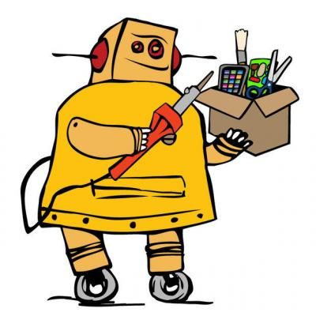

关于

自我介绍
简介
我叫缪宇飏(Miao Yuyang)，昵称为myyerrol（来源于我中文名拼音缩写myy和英文名errol的合成），毕业于西北工业大学计算机科学与技术专业本科。
我是一个崇尚开源精神的Maker，热爱嵌入式和机器人，喜欢自己动手实现自己想做的任何事物。我目前业余开发的主要方向为嵌入式软件，虽然我在之前的项目中也画过硬件PCB并编写过上层软件，但自从我大一开始接触嵌入式开发并逐渐喜爱上它的时候，我就明白嵌入式已经成为我项目开发中最不可或缺的一部分。更重要的是，伴随着人工智能技术的快速发展，机器人开始逐渐受到越来越多人的关注，而作为整个机器人系统的核心——嵌入式的重要性不言而喻。因此，我希望自己未来可以为机器人嵌入式系统的发展贡献自己的一份力量，以便为之后机器人的智能化发展提供坚实的基础和保障。
个人经历
中国服务机器人大赛
时间：
2015-05-08~2015-05-10总结：
这是我们第一次代表晓萌服务机器人团队来参加比赛。虽然我们在比赛的过程出现了一些的问题，导致成绩不理想，但此次经历让我们从中获得了宝贵的经验和教训，并更加坚定了我们接下来全力准备十月份比赛的决心。RoboCup合肥国际赛
时间：
2015-07-16~2015-07-23总结：
第一次亲眼见到之前在书上或网上才能看到的机器人，感觉国外队的机器人设计都非常逆天，而且技术水平也都很强。除此之外，在为期六天的比赛时间里，我们从其他队伍中所学习到的经验与知识。总之，见识到了国内外顶尖大学的机器人技术，还有各种机器人实验室教授的讲座，收获非常多！RoboCup贵阳公开赛
时间：
2015-10-15~2015-10-22总结：
在两天漫长而又充满挑战的比赛中，我们坚持到了最后。尽管在技术上我们还和其他队伍有一定的差距，但我相信现阶段的成果是属于每一个西工大RoboCup@Home团队成员的。未来，我希望通过我们自己或者下一代成员继续不懈地努力，可以让晓萌服务机器人做到更好的智能化，使其能在服务于人的目标上更进一步！ROS上海暑期夏令营
时间：
2017-07-23~2017-07-27总结：
在为期四天的暑期夏令营中，我发现有越来越多的人开始接触、学习甚至是研究ROS，并从中受益。ROS作为机器人开发的首选软件框架，拥有很多优点，这使其逐渐成为机器人开发的事实标准。最后，我希望包括我在内的中国ROS开发者在未来不仅可以熟练地掌握和使用ROS，还能为ROS社区贡献自己的一份力量。
团队项目
晓萌家政服务机器人
时间：
2014-10-01~2016-05-01简介：
本项目为开源项目，研究成果托管在GitHub网站上，点击链接来访问该项目主页。晓萌机器人的架构主要分为四层，分别为硬件层、嵌入式层、驱动层和软件层。硬件层的话主要包含各种传感器、执行器和编码器，用于接收外部环境的数据；硬件之上是嵌入式层，STM32作为下位机的主控，主要的任务是负责将软件组通过RS-485传过来的数据进行解析，并且以最快的速度传递给接有驱动盒的电机来实时地控制底盘和机械臂。与此同时，通过电机编码器返回的数据可以用来计算底盘里程计和获取机械臂的关节位置信息；嵌入式层之上是驱动层，它为软件使用硬件提供基础；最后是软件层，主要使用ROS来做系统的集成，是晓萌机器人最核心，也是最智能的部分。
总结：
首先我很幸运自己能有机会在本科阶段就加入到这样一支强大的团队中来，而且还能做我自己喜欢做的东西。当然，我觉得最重要的是我体会到了什么才叫真正的团队。回顾以往的开发经历，我们也曾遇到过人员流失等种种困难，但团结一心使我们最终坚持到了现在。多少个周末、寒暑假，别人在放松休息的时候，我们在埋头为晓萌团队的发展贡献自己的力量。我也记不清赛前我们到底熬了多少个昼夜，为比赛项目测试了多少次，但有一点是值得肯定的，我们能够彼此不懈努力并为此拼命的最大动力只来源于学长曾经教导过我们的一句话：绝对不能坑自己的队友。其实有很多人都不理解我们，说我们比赛名次不是很好，拿的奖也不是国际奖，为什么还要牺牲那么多的时间或者有时还要冒着挂科的巨大风险来去做这些东西。其实我想说的是，奖这个东西往往不代表能力，或者说奖不能完全体现出我们的真实水平。就像学长曾说过的，奖只能证明你曾经经历过，只有你自己知道你配得上还是配不上这个奖。总之，在经历过三次比赛之后，我开始慢慢意识到也许奖真的不那么重要，重要的是我们可以用我们的能力来陪伴并见证晓萌的不断成长。有收获，就不遗憾了。Breeze微型四轴飞行器
时间：
2016-08-01~2017-05-20简介：
本项目为开源项目，研究成果托管在GitHub网站上，点击链接来访问该项目主页。本项目以微型四轴飞行器的飞控系统为对象，研究内容主要涉及以下三个方面：搭建微型四轴飞行器的硬件平台，使用Altium Designer软件设计电路模块并完成最终PCB板的设计；搭建嵌入式开发环境，并编写嵌入式底层驱动和飞控程序，确保微型四轴飞行器能够实现比较稳定的飞行；基于上述成果，制订串口通信协议并根据此协议在PC上编写远程调试软件，为其他算法程序(如OpenCV等)提供可被调用的API接口。
总结：
由于时间和经费原因，目前硬件电路的设计还不够封装化和模块化。因为硬件电路是整个机器人系统里面最核心的部分，因此良好的硬件是机器人的根本，这些还需要在以后的研究中继续完善。
本项目目前使用C语言来编写嵌入式代码，但由于C语言是面向过程的高级语言，它对源码的封装性远不如基于面向对象思想的C++，而对于一个成功的项目来说，封装化、模块化的代码是必不可少的，因此尽管C语言在嵌入式开发中有着其独特的优势，但C++才应该是现代嵌入式开发的首选。除此之外，本项目所设计的通信协议比较冗余，而且功能也比较有限。未来，这些问题都将会被逐渐地改善。
本项目对飞控算法的研究并未深入，只是研究了目前比较流行的Mahony互补滤波算法并在四轴飞行器上测试了其效果。由于飞控算法本身理论性比较强，而且用代码实现起来难度较高，所以关于它的研究，还需要之后继续努力。
本项目未涉及ROS(Robot Operating System)方面的内容。但由于ROS目前已经成为机器人软件开发的事实标准，因此本项目将来也会尝试基于ROS来搭建整个四轴飞行器的上层软件架构。
个人项目
大一
基于Arduino的单片机最小系统
时间：
2014-04-15~2014-05-01原理：
这是我第一次使用洞洞板来焊接硬件电路。这个单片机最小系统包含有9V的降压模块、手动复位电路以及扩展接口，它使用USB或者外部电源供电，能通过USB转串口模块来实现数据通信和程序烧写。总结：
总之，虽然自己在制作的过程中遇到了一些问题（比如焊接、布线和烧写bootloader等），但当程序可以被正常地下载到单片机并能够正常运行时，那种喜悦之情实在是难以形容。基于Raspberry Pi+Arduino的简单轮式机器人
时间：
2014-05-01~2014-07-01背景：
Raspberry Pi和Arduino作为目前这个时代最为成功的两个开源硬件，拥有各自无法替代的优势。Arduino拥有封装好的库文件，因此其在连接硬件方面有着先天的优势。而Raspberry Pi在计算方面却又是普通单片机所不具有的，所以为何不将二者创造性地互联在一起，从而迸发出最耀眼的开源火花呢？原理：
本轮式机器人主要是由Raspberry Pi和Arduino两大核心组成。它可以实现自动和手动两种驾驶方式，手动驾驶主要依靠蓝牙键盘进行控制，当机器人检测到前、左、右的障碍物时，可以自动规避而拒绝键盘此时发送的命令。自动驾驶方面则首先是通过四路红外循迹模块完成循线功能，避障模块可以使机器人在非黑线的地面移动时也能进行一定程度的自主行走。点击链接获取该项目的程序源码。总结：
在本次项目中，我学到了很多知识，其中包括传感器的使用以及如何进行上下位机间的串口通信等。总之，我希望自己能够在接下来的时间里多在数据结构、算法和系统底层方面下些功夫，力求做出更有难度和深度的项目。基于Arduino的小型四自由度机械臂
时间：
2014-08-20~2014-08-22原理：
机械部分主要是由多种连杆机构所组成，它使得机械臂可以灵活地进行左右、前后、高低等位置的变换。电子部分采用Arduino控制板并将摇杆模块和舵机信号线分别连接到它的模拟和PWM引脚上。软件部分是循环检测摇杆模拟电压值并将它映射成舵机的相应角度数，从而实现对机械臂的控制。总结：
本次项目是我在北京创客空间做的。除了与队友一起相互学习、相互交流之外，我算是真正体会到了创客的核心精神所在，总之感觉非常棒！基于Arduino的微型激光雕刻机
时间：
2014-08-23~2014-08-25背景：
自己曾经在无线电杂志上看到过有关将光驱改造成激光雕刻机的文章，觉得非常有创意，又恰巧因为家里的地下室里有废旧的电脑主机，于是自己也打算做一台。原理：
机械部分主要以废旧的光驱为主体，两个带有导轨的步进电机组件被水平和垂直地安装在底板上，当作X轴和Y轴，激光头则被固定在Y轴上。电路部分使用Arduino来分别控制继电器和两路步进电机驱动模块，继电器控制激光的开和关，而步进电机驱动模块显然是控制那两个步进电机的。软件部分采用Github上开源的Grbl，它可以将G代码通过串口的方式发送给Arduino，而Arduino中的程序可以将得到的G代码转换成相应的信号，从而精确地控制两路步进电机的转动和继电器的开与关。总结：
该项目制作过程中的最大困难在于对金属底板的钻孔，不过好在经过一段时间的努力，最后的结果还算令人满意。
大二
构建自己的Linux操作系统（LFS）
时间：
2015-01-25~2015-02-05背景：
许多人也许会问：“当你可以下载和安装一个现成的Linux系统时，为什么还要如此麻烦地从源码开始手动地构建一个Linux系统呢？”我想这就是LFS项目的核心意义所在：帮助人们学习理解Linux系统内部是如何运作，以及各组件是怎样一起互相依赖工作的，当然你也能获得深入系统底层的定制能力。原理：
系统制作的核心就是工具链的制作以及修改工具链的依赖方式。这样做的目的是使生成的目标系统不会依赖于主系统而能自己独立地存在。要完成以上任务，首先需要主系统先编译生成预工具链，再由预工具链生成临时工具链，调整工具链，使临时工具链变为内部依赖从而自己编译构建临时系统，最后由临时系统代替主系统来完成后续目标系统工具链的制作，再次调整工具链，之后目标系统自给自足，完成余下软件包的编译、安装与配置。困难：
我认为LFS的制作过程中基础并非关键，锲而不舍的精神和一丝不苟的态度才是最为重要的。我第一次对照着手册做到1/4时，系统死机，无法恢复原先的状态，重来。第二次可能是strip命令参数没有设置好又或者是自己之前没按手册敲对命令，积累到最后导致从临时系统到目标系统的工具链调整出现问题，编译时无法链接Glibc库文件，好不容易做到一半只能从头再来。 之后也有好几次因为低级失误重头再来，说实话，我都有点抓狂了。总结：
作为初学者的我曾经只是会在控制台敲几个ls之类的命令，从未以源码的方式编译过软件，但是当自己亲手花5-6天时间，一行一行地输入命令完成LFS的全过程之后，我才发现自己对Linux有了不一样的见解。没人赞同学习Linux可以从LFS开始，但它教会你的都是真正的Linux基础知识。移植Nokia 5110显示屏驱动
时间：
2015-02-15~2015-02-20背景：
CSDN上曾经有一篇关于嵌入式开发板Raspberry Pi移植TFT 2.4寸显示屏的博客。自己看过之后很有感触，不过此时手边只有个搞单片机时剩下的Nokia 5110显示屏，尽管驱动芯片与驱动的方法不一样 ，但是核心原理应该是差不多，况且国外大神曾在Nokia 5110上成功过，于是自己也打算尝试一下。原理：
硬件方面使用了硬SPI，传输速率会快很多。软件部分首先需要将原先的驱动代码进行相应的改写，由于Raspberry Pi芯片采用的是ARMv6架构，因此移植过程会有一些不同的地方。以上搞定之后进入编译内核选项，把驱动编译成内核模块并且添加对FrameBuffer的支持，FrameBuffer是设备驱动接口，它相当于显存的映像，若将其映射到进程地址空间，则可以直接对屏幕进行读写操作，使用方便的同时又具有很好的实时性，因此我们要做的就是利用SPI通讯方式，把屏幕内容写入到内核新增的FrameBuffer设备，即Nokia 5110中去。最后只要配置启动文件，就能实现开机自动加载。困难：
因为我想测试一下Raspberry Pi在编译内核方面的效率究竟有多少，于是并没有按常规搭建交叉编译环境，而是直接在Raspberry Pi上运行内核模块的编译，最后的结果不出所料，那速度实在是慢得受不了，大概花了两天两夜才搞定。这可能是我在制作的过程中遇到的最大麻烦。总结：
通过学习了解到了FrameBuffer的原理与使用的方法，自己对设备驱动以及内核编译移植方面也有了初步的认识。总之，收获不少。
大三
基于MIPS指令集的多周期CPU
时间：
2015-10-01~2015-12-30原理：
该项目是“计算机组成原理与体系结构”这门课的课程设计。首先根据书中的MIPS架构图将每个CPU指令的执行过程分为取指、译码、执行、访存和回写这五个主要部分。其中每个部分均采用Verilog硬件描述语言来编写相应的模块，并根据模块之间的逻辑关系建立起数据通路。该多周期CPU实现了50多条基本指令并且全部在Modesim上仿真通过，由于协处理器实现起来难度较大，所以MIPS的浮点类指令没有考虑。总结：
根据本次项目，我掌握了Verilog硬件描述语言的使用方法并理解了硬件逻辑设计的思想。基于MySQL+Qt的图书馆管理系统
时间：
2015-10-01~2016-01-10原理：
本项目是“数据库原理”课的课程设计。它采用Qt作为软件的主界面，并使用Qt中的API来连接MySQL数据库并对其中的数据进行添加、编辑、更新和删除等操作。该项目实现的功能有：用户登录功能、管理员功能（包含图书管理、读者管理和借阅管理）和读者功能（包含图书检索、图书借阅和续借归还）。点击链接获取该项目的程序源码。总结：
通过该项目，我学会了数据库基础应用开发方面的知识，收获很多。基于Pascal语言的简单编译器
时间：
2016-05-01~2016-06-20原理：
该项目是“编译原理”课的课程设计。它分别使用Flex和Bison这两个软件来做词法和语法分析，并在语法分析的过程中动态地生成四元式和抽象语法树等中间代码表示。由于时间缘故，目前该编译器只实现了前端的语法分析，后端的汇编代码生成部分并没有涉及到。点击链接获取该项目的程序源码。总结：
经过该项目，我对整个编译器的运行原理有了一个清晰的认识，并为之后编写高效的代码奠定了基础。基于MySQL+Qt的银行ATM系统
时间：
2016-06-01~2016-06-15原理：
该项目是“软件工程”课的课程设计。它的原理与上面介绍过的“基于MySQL+Qt的图书馆管理系统”类似，不同之处在于我添加了一个定时器线程，它可以在规定的时间内对界面的按钮进行检测，如果没有按钮被按下，则在定时器计时递减为0时，系统自动退出登录，这样做主要是模拟真实中ATM机所会采取的安全措施。最后点击链接获取该项目的程序源码。总结：
该项目虽然与之前的那个图书馆管理系统差不多，不过这次我是根据软件工程的要求来编写代码的，收获很多。基于Nvidia Jetson TK1+Arduino的简单轮式机器人
时间：
2016-07-15~2016-07-30原理：
本项目为计算机学院暑期课程“面向机器人应用的嵌入式系统”的课程设计。该项目主要是在Jeston TK1上使用OpenCV库来做人脸的检测和识别并将识别到的结果通过串口发送给Arduino，Arduino接收到数据后再根据车前方的超声波模块来一起控制电机的转速和方向。点击链接获取该项目的程序源码。总结：
尽管时间有限，我依然还是学到了如何在Nvidia Jetson TK1上使用OpenCV来实现简单的人脸检测和识别。我相信未来我可以做得更好。
大四
基于Arduino的小型十八自由度六足机器人
时间：
2017-01-10~2017-02-25原理：
该项目机械部分使用白色亚克力作为主要材料，并且使用9G金属齿舵机作为肢体的执行机构。电路部分则分为电源管理和核心控制两个单元，电源管理负责对锂电池进行降压操作，以便为舵机驱动板和主控板提供能量。核心控制单元负责接收无线遥控的数据并根据超声波测得的距离数据来判断进行哪种运动。软件部分就是不断循环检测无线数据并根据其中的内容进行相应的操作。最后点击链接获取该项目的程序源码。总结：
完成这个项目算是了却了自己大一时的心愿。那时我记得自己基本上什么都不懂，但对多足机器人非常入迷，总想自己也能做一个，后来我确实也做了一个六足机器人（自由度只有12个），不过遗憾的是只要一移动机器人，它的整个机械结构就散架了（真的没有夸张）。总之，那次失败让我明白了想做好机器人，不仅需要热情，还需要你对机械、电子和软件等知识理论的全方面理解和掌握。也就是从这次失败开始，我立志要让自己变得更强，至于学习的效果如何，就交给下一个更复杂的项目来检验吧。